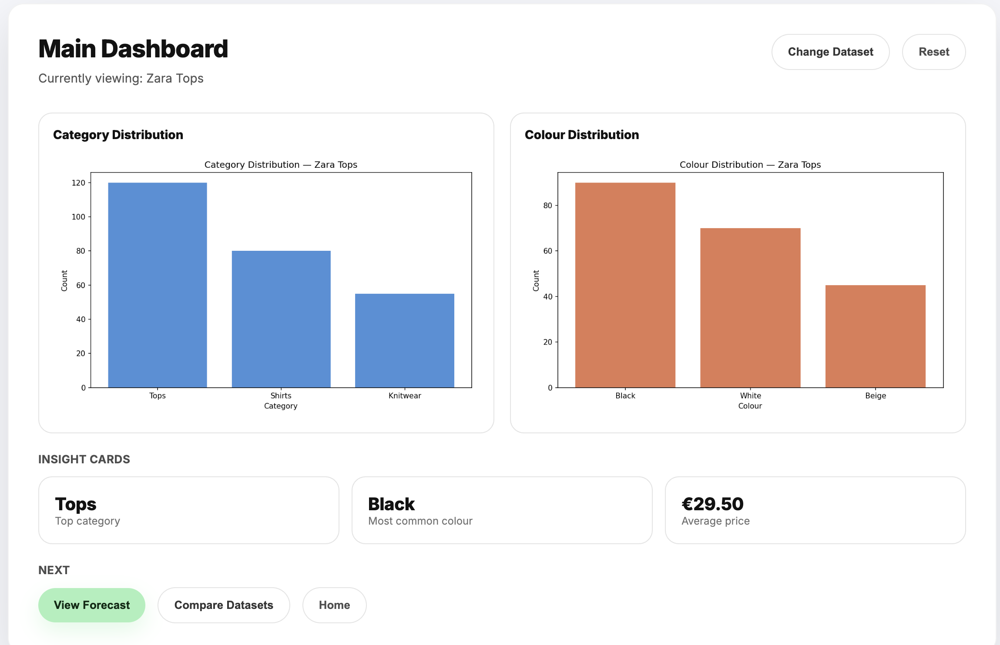

The Micro AI Trend Forecaster is an interactive web dashboard that lets users explore fashion trend data and view AI-generated forecasts. Users upload or select a dataset, filter by category and season, and the tool surfaces trend patterns, colour distributions, and a 6-month sales forecast using a linear regression model trained on the data.
It started from a simple observation: traditional trend forecasting is expensive, slow, and locked behind large agencies. This project is an attempt to make that kind of intelligence more accessible using data that's already out there.
